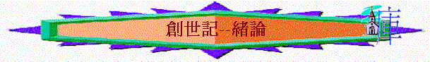

一.書名
～希伯來文舊約聖經原無書名，猶太人用各書開頭的第一個字來命名，所以創世記又名「起初」
二.作者----摩西
「論到死人復活，你們沒有念過摩西的書荊棘篇上所載的嗎？神對摩西說：『我是亞伯拉罕的神，以撒的神，雅各的神。』」可12:26
～主耶穌題到摩西的書，在猶太人文化裏面公認舊約創、出、利、民、申合稱五經是摩西的書，是摩西所寫的，但摩西不是生於創世記的年代，而創世記第一章頭五日所記載是非人類歷史，沒有人在頭五日中，如何記載所發生的事？
1.神直接的啟示
「那曾對以色列人說『神要從你們弟兄中間給你們興起一位先知像我』的，就是這位摩西。這人曾在曠野會中和西乃山上，與那對他說話的天使同在，又與我們的祖宗同在，並且領受活潑的聖言傳給我們。」徒7:37-38
～摩西是先知，曾直接從神中得啟示，也可因此而知道神起初創造天地的歷史
2.人資料的搜集
三.內容及主題
1.歷史的角度
「創造天地的來歷，在耶和華 神造天地的日子，乃是這樣，」創2:4
～經文直接講出主題----交待創造天地萬物的來歷
～而創世記的歷史直接影响全人類及整個舊約及新約的發展
～新約內容曾引用多過160次的創世記之內容
A.太古歷史(1:1-11:9)
a.創造篇
b.墮落篇
c.洪水篇
d.巴別篇
B.先祖歷史(11:10-50:26)
a.亞伯拉罕篇
b.以撒篇
c.雅各篇
d.約瑟篇
2.真理教導的角度
「聖經都是神所默示的（或作：凡神所默示的聖經），於教訓、督責、使人歸正、教導人學義都是有益的，叫屬神的人得以完全，預備行各樣的善事。」提後3:16-17
～聖經不單是一本歷史書，也是要藉歷史及真理教導我們正確美好的路
～而創世記有一個重要的主題：美好與敗壞，教導我們何為美好的事，提醒我們人頪敗壞的行為
＊主題：美好與敗壞
A.美好世界的樣式(創1-2)
a.美好的天地
(1)是神所創造
「起初，神創造天地。」1:1
(2)是神看為好
「神看光是好的，就把光暗分開了。」1:4
「神稱旱地為「地」，稱水的聚處為「海」。神看著是好的。」1:10
(3)是各從其類
「神說：「地要生出活物來，各從其類；牲畜、昆蟲、野獸，各從其類。」事就這樣成了。」1:24
b.美好的人類
(1)其特質
(2)其生命
(3)其生活
(4)其婚姻
B.敗壞墮落的鑑戒(3:1-11:9)
a.敗壞的原因----始祖被引誘而犯罪
b.敗壞的特質
(1)延續性的敗壞
～罪從一人而來，而延續至下一代
～該隱不需要人教導，他就延續了罪性，殺了亞伯
(2)群體性的敗壞
～由該隱延續至挪亞當時整個世代
(3)聯合性的敗壞
～人類開始聯合起來，敵擋神(巴別事件)
c.敗壞的結局
～帶來死亡與神的審判
「神也沒有寬容上古的世代，曾叫洪水臨到那不敬虔的世代，卻保護了傳義道的挪亞一家八口。又判定所多瑪、蛾摩拉，將二城傾覆，焚燒成灰，作為後世不敬虔人的鑑戒；」彼後2:5-6
C.先祖屬靈的榜樣(11:10-50:26)
「亞伯拉罕因著信，蒙召的時候就遵命出去，往將來要得為業的地方去；出去的時候，還不知往那裡去。」來11:8
「以撒因著信，就指著將來的事給雅各、以掃祝福。雅各因著信，臨死的時候，給約瑟的兩個兒子各自祝福，扶著杖頭敬拜神。
約瑟因著信，臨終的時候，提到以色列族將來要出埃及，並為自己的骸骨留下遺命。」來11:20-22
～聖經創世記中，有很多美好的人物可以成為我們在信仰路上的榜樣
a.亞伯拉罕----效法他的信心
b.以 撒----效法他的謙和
c.雅 各----效法他抓住神的祝福
d.約 瑟----效法他敬畏神
3.認識神的角度
「這事以後，耶和華在異象中有話對亞伯蘭說：「亞伯蘭，你不要懼怕！我是你的盾牌，必大大的賞賜你。」」創15:1
「亞伯蘭年九十九歲的時候，耶和華向他顯現，對他說：「我是全能的神。你當在我面前作完全人，」17:1
「以撒叫了雅各來，給他祝福，並囑咐他說：「你不要娶迦南的女子為妻。你起身往巴但亞蘭去，到你外祖彼土利家裡，在你母舅拉班的女兒中娶一女為妻。願全能的神賜福給你，使你生養眾多，成為多族，」28:1-3
～創世記充滿了「神」的字眼，神(Elohim)有全能者的意思，而祂也直接介紹自己是全能的神
～另外，也從各章中特顯全能的神不同的屬性
＊主題：全能的神
A.大能的創造者(1-2)
B.公義的審判者(3:1-11:9)
C.全能的神(11:10-26:33)
D.以色列的牧者(27-50)
4.彌賽亞的角度
「耶穌對他們說：「無知的人哪，先知所說的一切話，你們的心信得太遲鈍了。基督這樣受害，又進入他的榮耀，豈不是應當的嗎？」
於是從摩西和眾先知起，凡經上所指著自己的話都給他們講解明白了。」路24:25-27
「耶穌對他們說：「這就是我從前與你們同在之時所告訴你們的話說：摩西的律法、先知的書，和詩篇上所記的，凡指著我的話都必須應驗。」於是耶穌開他們的心竅，使他們能明白聖經，」路24:44-45
＊主題：預表中的基督
A.預表基督是創造天地
「神說：「要有光」，就有了光。」創1:3
「太初有道，道與神同在，道就是神。這道太初與神同在。萬物是藉著他造的；凡被造的，沒有一樣不是藉著他造的。」約1:1-3
B.預表基督是末後的亞當
「亞當給他妻子起名叫夏娃，因為他是眾生之母。」創3:20
「經上也是這樣記著說：「首先的人亞當成了有靈（靈：或作血氣）的活人」；末後的亞當成了叫人活的靈。」林前15:45
C.預表基督是女人的後裔
「我又要叫你和女人彼此為仇；你的後裔和女人的後裔也彼此為仇。女人的後裔要傷你的頭；你要傷他的腳跟。」創3:15
「這樣說來，律法是為什麼有的呢？原是為過犯添上的，等候那蒙應許的子孫來到，並且是藉天使經中保之手設立的。」加3:19
「及至時候滿足，神就差遣他的兒子，為女子所生，且生在律法以下，」加4:4
D.預表基督是永遠的大祭司
「又有撒冷王麥基洗德帶著餅和酒出來迎接；他是至高神的祭司。他為亞伯蘭祝福，說：「願天地的主、至高的神賜福與亞伯蘭！」創14:18-19
「這麥基洗德就是撒冷王，又是至高神的祭司，本是長遠為祭司的。他當亞伯拉罕殺敗諸王回來的時候，就迎接他，給他祝福。」來7:1
「他成為祭司，並不是照屬肉體的條例，乃是照無窮（原文作不能毀壞）之生命的大能。因為有給他作見證的說：「你是照著麥基洗德的等次永遠為祭司。」」來7:16-17
E.預表基督使萬國得福
「為你祝福的，我必賜福與他；那咒詛你的，我必咒詛他。地上的萬族都要因你得福。」」創12:3
「你們是先知的子孫，也承受神與你們祖宗所立的約，就是對亞伯拉罕說：『地上萬族都要因你的後裔得福。』
神既興起他的僕人，（或作：兒子），就先差他到你們這裡來，賜福給你們，叫你們各人回轉，離開罪惡。」」徒3:25-26
F.預表基督是神人中間的中保
「夢見一個梯子立在地上，梯子的頭頂著天，有神的使者在梯子上，上去下來。」創28:12
「又說：「我實實在在的告訴你們，你們將要看見天開了，神的使者上去下來在人子身上。」」約1:51
5.救恩計劃的角度
「並且聖經既然預先看明，神要叫外邦人因信稱義，就早已傳福音給亞伯拉罕，說：「萬國都必因你得福。」」加3:8
「弟兄們，我且照著人的常話說：雖然是人的文約，若已經立定了，就沒有能廢棄或加增的。所應許的原是向亞伯拉罕和他子孫說的。神並不是說「眾子孫」，指著許多人，乃是說「你那一個子孫」，指著一個人，就是基督。我是這麼說，神預先所立的約，不能被那四百三十年以後的律法廢掉，叫應許歸於虛空。」加3:15-17
「但這因信得救的理既然來到，我們從此就不在師傅的手下了。所以，你們因信基督耶穌都是神的兒子。」加3:25-26
～原來神已在創世記中藉亞伯拉罕展開了祂永恆的救恩計劃
＊主題：神救恩計劃的開始
A.計劃的需要(創1:1-11:9)
～因人的敗壞，引來咒詛及審判，神要展開祂的拯救計劃
B.計劃的開始(創11:10-50:26)
「亞伯蘭年九十九歲的時候，耶和華向他顯現，對他說：「我是全能的神。你當在我面前作完全人，我就與你立約，使你的後裔極其繁多。」亞伯蘭俯伏在地；神又對他說：「我與你立約：你要作多國的父。從此以後，你的名不再叫亞伯蘭，要叫亞伯拉罕，因為我已立你作多國的父。我必使你的後裔極其繁多；國度從你而立，君王從你而出。我要與你並你世世代代的後裔堅立我的約，作永遠的約，是要作你和你後裔的神。我要將你現在寄居的地，就是迦南全地，賜給你和你的後裔永遠為業，我也必作他們的神。」」創17:1-8
a.揀選----亞伯拉罕
b.立約
～是神主動的
～是無條件的
～是永遠的
c.內容
(1)後裔繁多
(2)君王從亞伯拉罕而出
(3)有地土
d.目的
～神要藉亞伯拉罕及他的後及神應許的地土，來建立一個屬神的民族----以色列，成為祭司的國度，聖潔的國民，使他們可以見証神，吸引外邦人歸向神
(1)建立屬神的國度
(2)引向基督的救恩
～而萬國因他的後裔得福，更是指向耶穌基督，用人的角度來說，祂是從以色列譜系而生，外邦人也可因信耶穌而成為神的子民
e.堅立(由亞伯拉罕至以撒至雅各，神逐步堅立祂的約
f.保守
～有很多危機出現，可以破壞神的救恩計劃，但神仍有保守
(1)亞伯拉罕時代危機----不育危機(沒後裔)
(2)以 撒時代危機----混雜危機(以撒可娶迦南女子為妻)
(3)雅 各時代危機----個人危機(雅各可以拒絶神)
(4)約 瑟時代危機----滅族危機(飢荒)